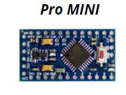
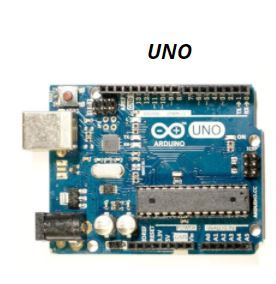
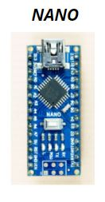
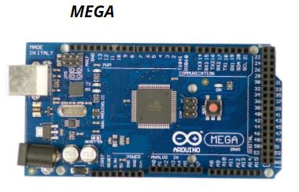
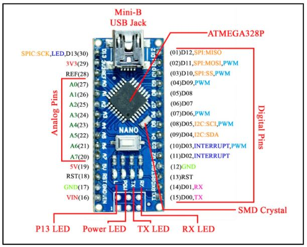

LECTURE 1¶
What is Arduino¶
Arduino is the name of a company that designs and manufacture a series of open-source and easy-to-use hardware kits, powered by Atmega328/Atmega328P microcontrollers.
These microcontrollers can be used by anyone for electronics prototyping or making cool DIY projects.
These are very easy to program using the Arduino IDE which is free and open source.
Why Arduino??¶
Open source and extensible hardware
Free and Open Source Software
Inexpensive
Very easy to program : Via USB and not a serial port.
Multi-Platform : Windows, Linux and Macintosh
Large community support
Difference Between Microprocessor || Microcontroller¶
Microprocessor is an IC which has only the CPU inside them i.e. only the processing powers.
Microprocessor cannot be used stand alone. They need other peripherals like RAM, ROM, buffer, I/O ports etc. Examples of Microprocessors: Intel’s Pentium 4, core 2 duo, i3, i5, i7
Microcontrollers, on the other hand, has a CPU, in addition with a fixed amount of RAM, ROM and other peripherals all embedded on a single chip. At times it is also termed as a mini computer or a computer on a single chip. Examples of Microcontrollers: ATMEL AT89 series,ATMega Series, etc.
Various Arduino Boards¶
   Pinout Diagram with Features¶
Some Example Projects¶
BASIC - Toggle LED state using button input. - Single/Multi digit counters using Seven Segment Displays. - Controlling LED brightness according to ambient light in the room. - Coil winding machine using a DC motor. - Tachometer - Remote Controlled toy car
ADVANCED - Home automation - Quadcopter - 3D Printer - Power Supply - Mood Lamp - CNC Machines - 3D LED cubes